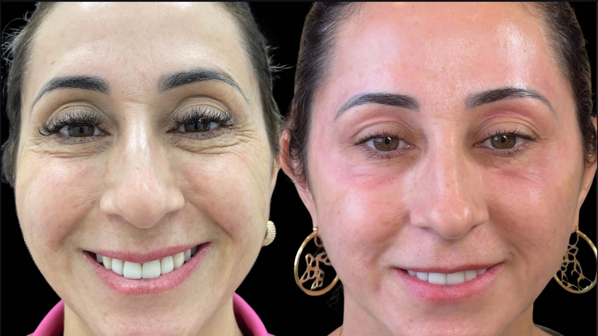
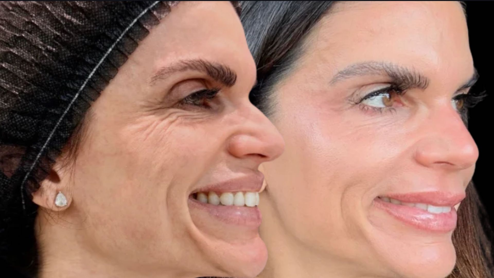
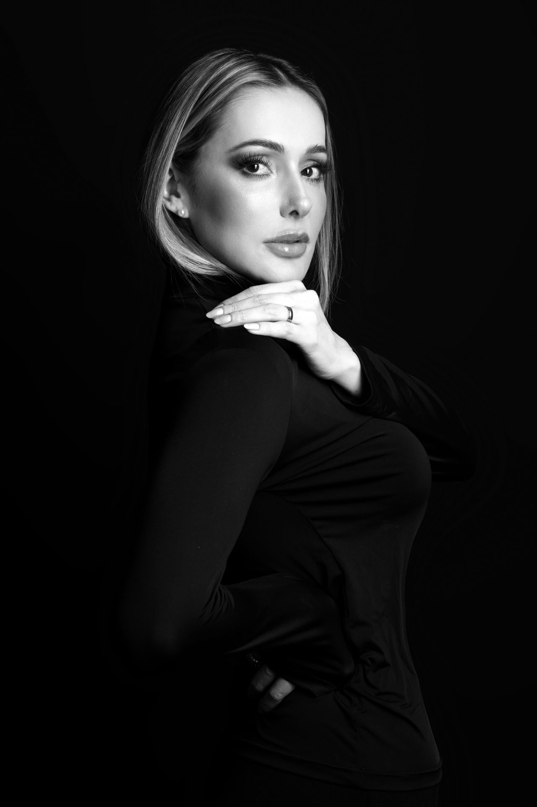
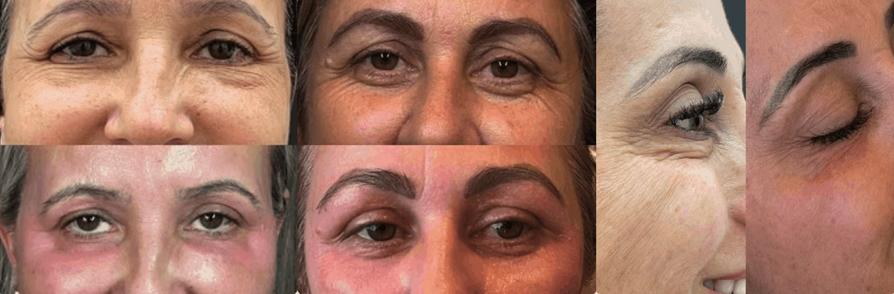

Sua cliente chega dizendo
"nada que eu faça resolve essa ruga"
e você não sabe o que oferecer?
Ela já tentou cremes, procedimentos e tratamentos, e nada resolveu. Não quer cirurgia. E está saindo do seu consultório direto para o concorrente que sabe entregar o resultado.
Próxima imersão · 13/12 às 9h
Próxima imersão · 13/12 às 9h
Verdade incômoda
Não basta ser boa.
É preciso ter um diferencial e construir autoridade para se posicionar como referência.
Caso contrário, você continuará sendo mais uma, competindo por desconto, fazendo o que todo mundo faz, com o ticket médio que todo mundo cobra.

O que é a imersão
A técnica de rejuvenescimento mais avançada, segura e lucrativa do mercado.
Sem bisturi. Sem aparelhos caros. Executada em 30 minutos de consultório , com resultado visível já na primeira sessão.
Sem cortes
Sem aparelhos caros
30 minutos

Quem te ensina
Dra. Rosana Vecchi Caldas
Fundadora da NatureFace
Referência nacional em estética não cirúrgica e rejuvenescimento facial avançado. Construiu uma das marcas mais respeitadas do segmento e formou centenas de profissionais que hoje são autoridade em suas regiões.
- Especialização internacional pela Harvard University
- Especialização ASA · Anatomy e cursos avançados no exterior
- Fundadora da NatureFace: marca de autoridade no setor
- Forte autoridade digital e referência em rejuvenescimento facial
Bastidores
"Quem sou eu para te
dizer tudo isso?"
Eu também já fui a profissional que olhava no espelho do consultório e se perguntava: "por que ela está cobrando o triplo do que eu cobro pelo mesmo procedimento?"
Estudei fora do Brasil, Harvard, ASA, Anatomy, não por vaidade acadêmica. Foi para encontrar a resposta que aqui ninguém me dava: existe uma técnica que resolve o que cirurgia, creme e procedimento nenhum estavam resolvendo.
Hoje, à frente do protocolo NatureFace, ensino exatamente o que eu queria ter aprendido 10 anos atrás, para que você não perca uma década descobrindo sozinha o que pode te transformar em referência agora.
Dra. Rosana Vecchi Caldas
A demanda está na sua porta
É isso que a cliente sente
e ninguém está resolvendo.
Pálpebras caídas que envelhecem o olhar, mesmo com pele cuidada e corpo em dia
Sensação de cansaço e tristeza permanente no olhar, sem motivo real
Vergonha e medo de cirurgia, riscos, recuperação longa, custo alto
Já tentou cremes caros e procedimentos que não entregaram resultado nenhum
Procura uma alternativa segura, rápida e sem cortes, e não encontra
Quer voltar a se reconhecer no espelho com um olhar jovem e descansado
Sua vantagem
Domine a solução que creme e procedimento nenhum entregou, e cobre o que ela vale.
O que muda na sua carreira
De prestadora de serviço a referência.
Ticket médio elevado
Procedimento premium que se paga em poucos atendimentos.
Autoridade local
A profissional procurada quando ninguém mais sabe resolver.
Diferenciação real
Saia da guerra de preços. Ofereça o que 95% não oferece.
Fidelização
Cliente que viu o resultado volta, e indica três amigas.
Segurança técnica
Indicação, execução e pós-procedimento sob protocolo.
Posicionamento premium
Marca pessoal sólida, com método e nome próprio na cidade.
Quem já fez
Profissionais que saíram do montão.
"Cobrei R$ 2.500,00 na primeira aplicação depois da imersão. A cliente chorou no espelho. Recuperei o investimento em uma semana."
"Eu literalmente perdia cliente para a concorrência. Hoje tenho fila de espera para o protocolo de pálpebra. Meu posicionamento mudou."
"O que mais me surpreendeu foi a segurança do protocolo da Dra. Rosana. Saí da imersão pronta para aplicar — sem medo."
Antes que você pense
"Mas será que serve pra mim?"
Preciso ter curso de estética avançada antes?
Não. Basta ser formada em estética, e você não precisa dominar flacidez. A imersão começa do alicerce, com anatomia da região periorbital e diagnóstico diferencial, e vai até a execução completa. Se você já atende, essa imersão é para você.
Vou precisar comprar equipamento caro?
Não. O protocolo da Dra. Rosana foi desenhado para usar material acessível, presente na maioria dos consultórios. Sem aparelho de R$ 80 mil a R$ 400 mil.
Existe demanda real por esse procedimento?
Alta. Olhar caído é uma das três queixas estéticas que mais crescem no Brasil, e a maioria das clientes recusa cirurgia. Quem oferece a solução não cirúrgica colhe um mercado pouco disputado.

Sua oportunidade
Imersão Blefaro Sem Corte
Aula ao vivo · ~2h · direto com a Dra. Rosana Vecchi Caldas
O que você vai viver:
- Encontro ao vivo de aproximadamente 2 horas com a Dra. Rosana
- Apresentação completa da técnica Blefaro Sem Corte
- Demonstração prática: como o protocolo é executado em consultório
- Critérios de indicação, segurança e diferenciação no mercado
- Sessão de perguntas e respostas ao vivo com a Dra. Rosana
- Como se posicionar como referência usando essa técnica
Investimento único
Acesso à imersão ao vivo com a Dra. Rosana
Pagamento 100% seguro · vaga confirmada por e-mail
As vagas são limitadas para garantir um encontro próximo e com espaço real para tirar suas dúvidas ao vivo. Quando lotar, encerra.
Você pode continuar sendo mais uma.
Ou pode virar referência.
A decisão é técnica. E é sua.